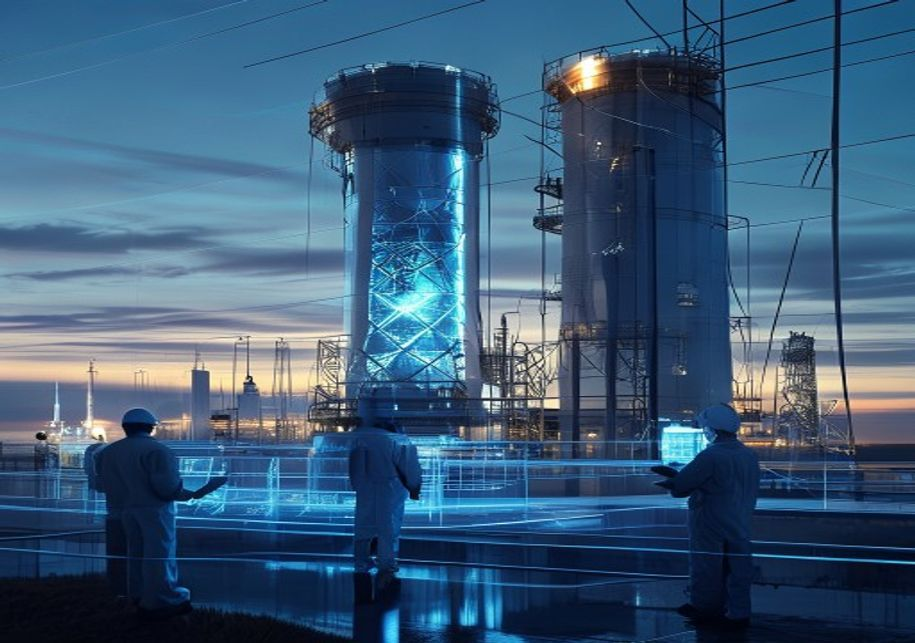
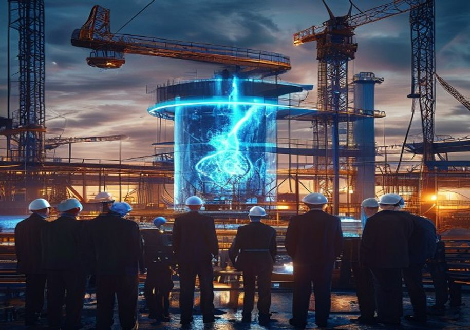
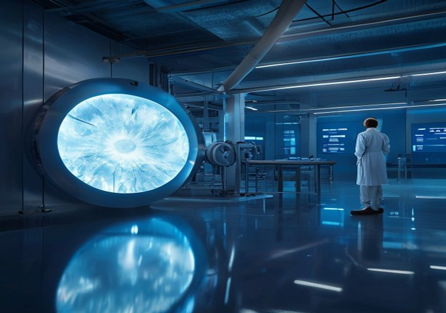

Nuclear Fusion Commercialization: Strategic Outlook and Implications for Decision-Makers
The research narrows the agenda to a few high-conviction issues
Nuclear fusion commercialization is advancing but faces a decade-long path to grid-scale power, with magnetic confinement leading in maturity. Cost competitiveness remains uncertain; fusion is likely to complement renewables rather than replace them. Private investment has surged, but public funding remains critical for infrastructure. Strategic implications include energy independence, climate mitigation, and first-mover advantages. The evidence boundary is constrained by limited operational data and reliance on projections. Key risks include technical delays, market competition from renewables, and regulatory hurdles. Immediate next steps: monitor milestones from leading projects, invest in supply chains, and engage in policy advocacy.
Magnetic confinement (tokamaks, stellarators) is the most mature fusion approach, with several private companies targeting net energy gain by 2030. Evidence: Commonwealth Fusion Systems' SPARC project aims for net energy by 2025-2026; ITER (tokamak) is delayed to 2035. Evidence boundary: no commercial-scale data yet. Management implication: invest in partnerships with leading magnetic confinement firms to secure early access to technology and talent.
Levelized cost of fusion energy is projected to be competitive with fission and fossil fuels by 2040-2050, but remains highly uncertain. Evidence: studies suggest fusion LCOE could range from $50-100/MWh by 2050, but no validated data exists. Evidence boundary: all projections are model-based. Management implication: do not base capital allocation on cost projections alone; hedge with renewables and storage investments.
Private fusion investment has surged past $5 billion globally, but public funding remains essential for large-scale infrastructure. Evidence: Fusion Industry Association reports $5.6 billion private investment as of 2024. ITER alone costs over $20 billion. Evidence boundary: investment figures are self-reported. Management implication: advocate for public-private risk-sharing mechanisms to bridge the funding gap between demonstration and deployment.
Tritium supply is a critical bottleneck; current production is insufficient for multiple fusion plants. Evidence: tritium is scarce, with global inventory around 20 kg. Breeding blanket technology is unproven at scale. Evidence boundary: no commercial tritium breeding exists. Management implication: invest in tritium breeding R&D and alternative sources (e.g., lithium-6) to secure fuel supply.
The CEO-level question is not whether Nuclear fusion commercialization outlook and strategic implications is interesting, but which decisions can be made now inside the public-evidence boundary.
Actions are sequenced by evidence gates and decision readiness
Fusion Commercialization Is Advancing but Faces a Decade-Long Path to Grid-Scale Power
Nuclear fusion has made significant strides in recent years, with multiple private companies and public projects targeting net energy gain within this decade. However, the transition from scientific demonstration to commercial power plant is expected to take at least 10-15 years. The most mature approach, magnetic confinement (tokamaks and stellarators), is led by ITER (international) and SPARC (private). Inertial confinement and alternative approaches like stellarators and field-reversed configurations offer potential but are at earlier stages. Key engineering challenges—materials that withstand extreme neutron flux, tritium breeding, and efficient heat extraction—remain unsolved at scale.
The evidence boundary is clear: no fusion plant has produced net electricity, and all timelines are projections based on current progress.
For decision-makers, this timeline means that fusion will not contribute to 2030 or 2040 decarbonization targets. Investment in fusion should be framed as a long-term hedge, not a near-term solution. Companies should monitor milestones from leading projects to validate progress and adjust strategies accordingly.

Magnetic Confinement Leads in Maturity, but Alternative Approaches Show Promise
Magnetic confinement fusion, particularly tokamaks, has the longest research history and highest technology readiness level (TRL). ITER, the world's largest tokamak, aims for first plasma by 2035 but has faced repeated delays and cost overruns. Private companies like Commonwealth Fusion Systems (SPARC) and TAE Technologies are pursuing faster, smaller designs. Stellarators, such as Wendelstein 7-X, offer steady-state operation but are more complex. Inertial confinement, pursued by companies like First Light Fusion, uses lasers or projectiles to compress fuel. Alternative approaches like magnetized target fusion (General Fusion) and field-reversed configurations (Helion Energy) could offer lower cost and faster development.
The evidence boundary: no approach has demonstrated net energy gain at scale, and cross-comparison is difficult due to different metrics.
For CEOs, the key commercial implication is that betting on a single technology approach is risky. A portfolio strategy that includes investments in multiple fusion methods, as well as partnerships with leading firms, can spread risk and increase the chance of capturing value from the eventual winner.
Cost Competitiveness Remains Uncertain; Fusion Likely to Complement Renewables
Projections for the levelized cost of fusion energy (LCOE) range from $50 to $100 per MWh by 2050, but these are highly uncertain due to lack of operational data. For comparison, solar and wind LCOE already fall below $30/MWh in many regions, and battery storage costs continue to decline. Fusion's value proposition may lie in providing firm, baseload power and high-temperature heat for industrial processes, where renewables face challenges. Grid integration hurdles include load-following capability and siting requirements. The evidence boundary: all cost projections are model-based and assume successful technology development. Decision-makers should treat fusion as a complement to renewables, not a replacement.
The commercial implication is that fusion's market entry will depend on its ability to compete in specific niches, such as 24/7 carbon-free energy for data centers or industrial heat for steel and cement production. Companies should identify these high-value applications and develop use cases now.
The investment-return implication is that fusion's cost trajectory is too uncertain to justify large capital commitments based on LCOE projections alone. Instead, investments should be structured with milestone-based tranches to manage risk.
Private Investment Surges, but Public Funding Remains Critical for Infrastructure
Private fusion investment has grown rapidly, reaching over $5.6 billion globally as of 2024, according to the Fusion Industry Association. Major players include Commonwealth Fusion Systems ($2 billion+), Helion Energy ($1.7 billion), and TAE Technologies ($1.2 billion). However, public funding remains essential for large-scale infrastructure like ITER ($20+ billion) and national laboratory research. Government programs in the US (DOE Fusion Energy Sciences), UK (STEP), and Japan (JT-60SA) provide critical support. The evidence boundary: private investment figures are self-reported and may not reflect actual capital deployed. Public funding is subject to political cycles and budget constraints.
For CEOs, the commercial implication is that private capital alone is insufficient to bridge the gap between demonstration and deployment. Companies should actively engage with governments to advocate for loan guarantees, tax incentives, and direct funding for fusion infrastructure.
The investment-return implication is that public-private partnerships can reduce risk and improve returns for early investors. Companies that secure government support may have a competitive advantage in accessing capital and talent.

Strategic Implications: Energy Independence, Climate Mitigation, and First-Mover Advantages
Fusion offers the potential for near-limitless, low-carbon energy, which could transform energy security and geopolitics by reducing dependence on fossil fuel imports. For climate goals, fusion could provide a firm, dispatchable power source to complement intermittent renewables, though it will not be available in time to meet 2030 or 2040 targets. First-mover advantages include capturing supply chain value, attracting talent, and setting technical standards. Countries and companies that invest early in fusion R&D, workforce development, and regulatory frameworks may gain significant economic and strategic benefits. The evidence boundary: geopolitical and climate impacts are speculative and depend on fusion's commercial success.
The commercial implication is that companies should start building fusion capabilities now, even if commercial deployment is a decade away. This includes investing in R&D, forming partners
The source backup should be used to validate this section before it is used for a decision.
